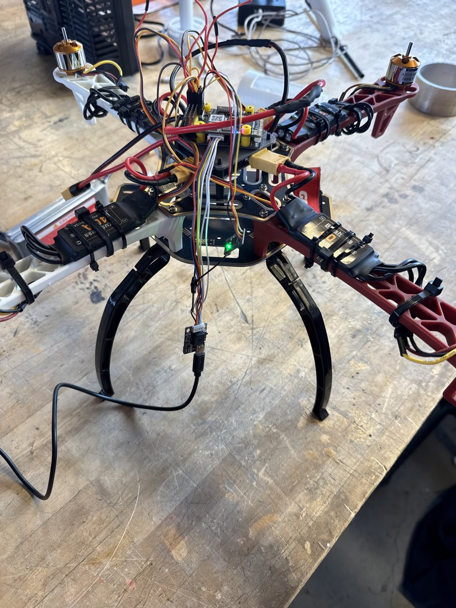
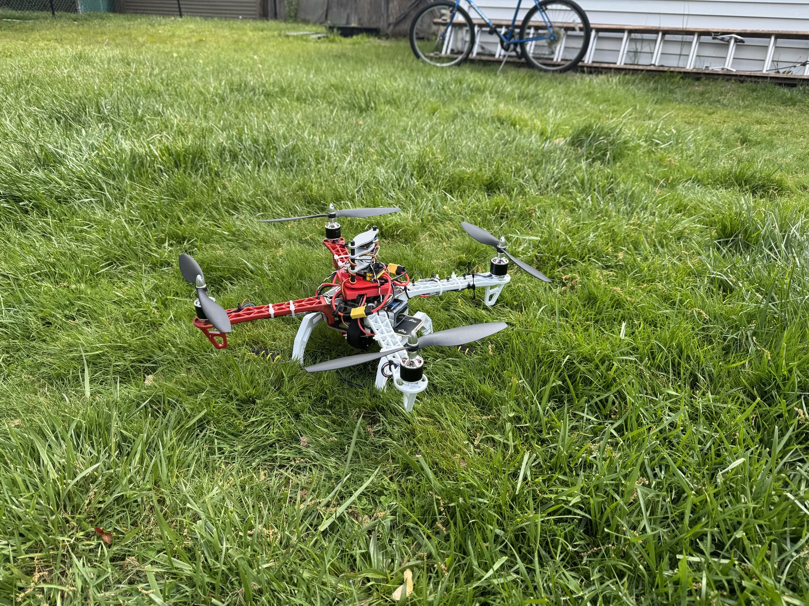
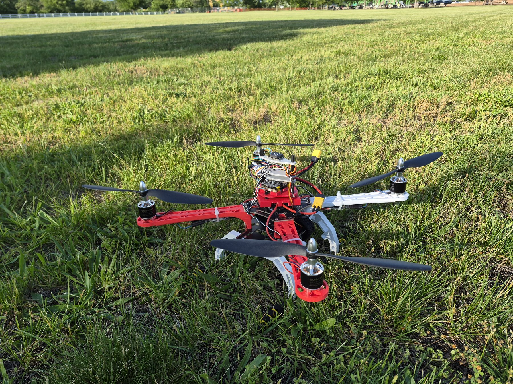
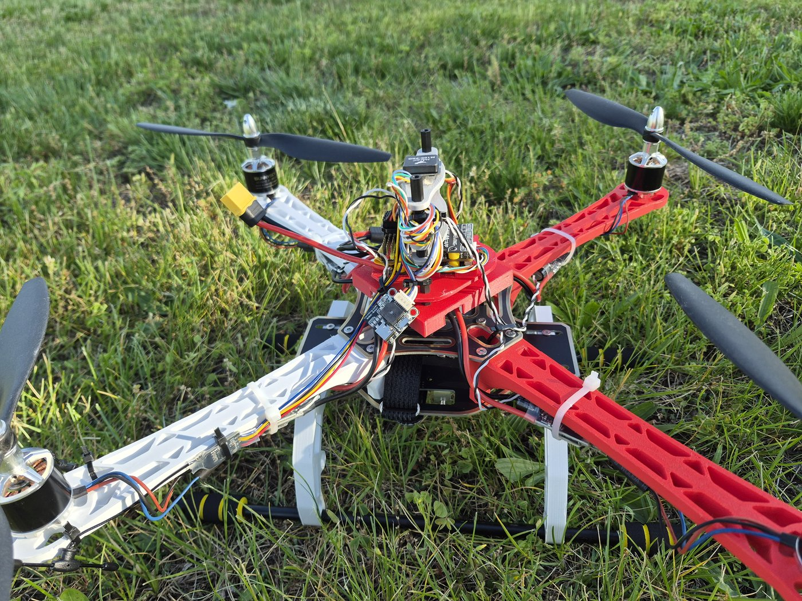
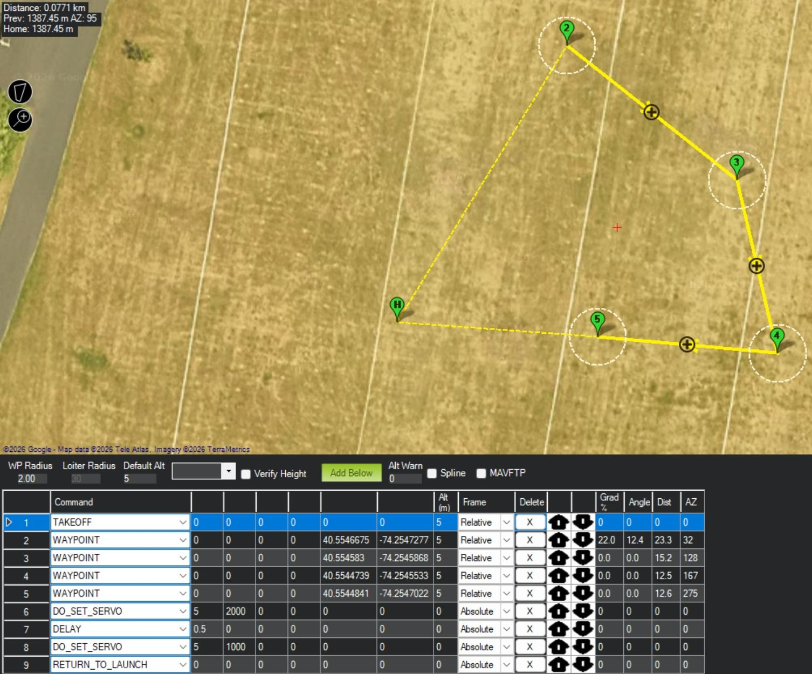

A quadcopter that flies a GPS waypoint mission, drops a payload on target, and returns home — fully autonomous, for under $200. I designed the airframe and release mechanism and integrated the full flight stack.
Build a low-cost autonomous delivery drone — take off, fly to GPS coordinates, drop a payload on target, and return to land, no pilot input after arming. I owned the structural design and system integration across three iterations, from a stock test rig to a fully custom 3D-printed airframe, plus the ArduPilot / STM32 flight stack and a servo-actuated drop mechanism.
Started on a stock frame to nail the electronics first — flight controller, GPS, power, ESCs, and motors — and debug wiring on the bench instead of in the air.

Designed and 3D-printed my own landing gear for a taller, more stable stance. First version to fly genuinely well — steady hover and clean GPS waypoint holds.

Designed and 3D-printed the entire airframe — topology-optimized arms and legs in SolidWorks. Everything structural is mine; only the motors, props, GPS, and electronics are off-the-shelf. This is the build that flew the mission below.

I topology-optimized the load-bearing parts in SolidWorks with ANSYS FEA — the lattice cutouts pull material from low-stress regions to cut weight while keeping the structure stiff.
I designed the aluminum drop mechanism in CAD and had it CNC-machined by PCBWay; a servo on a dedicated flight-controller channel fires the release as a mission command.

The whole flight is autonomous, planned in Mission Planner: take off, hit the GPS waypoints, fire the servo to drop the payload, then return to launch and land. No stick input after arming.

The exact mission flown below: TAKEOFF → WP2–WP5 → DO_SET_SERVO (payload drop) → DELAY → servo reset → RETURN_TO_LAUNCH.
Launch → waypoint navigation → payload drop → return to launch.